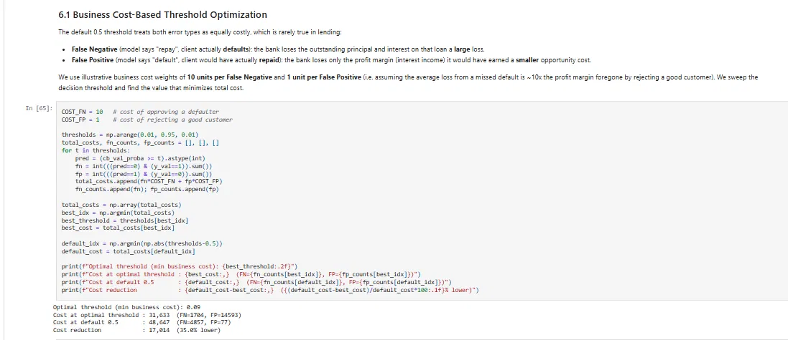
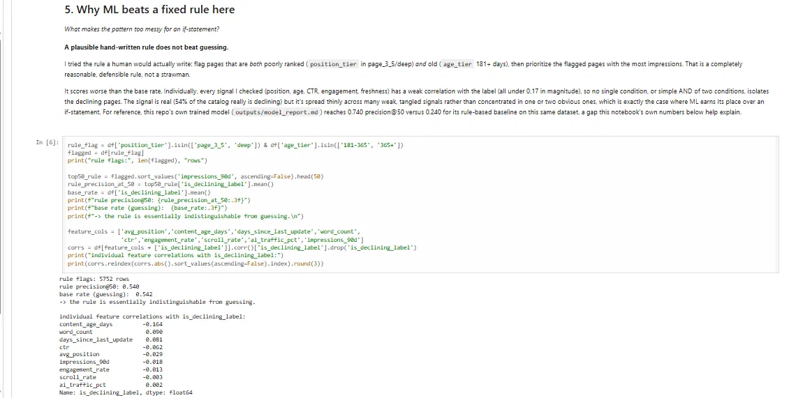
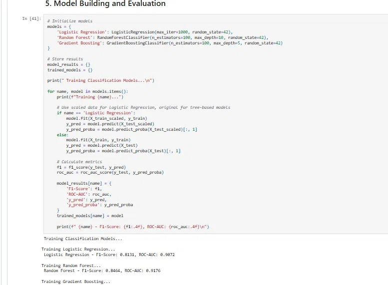
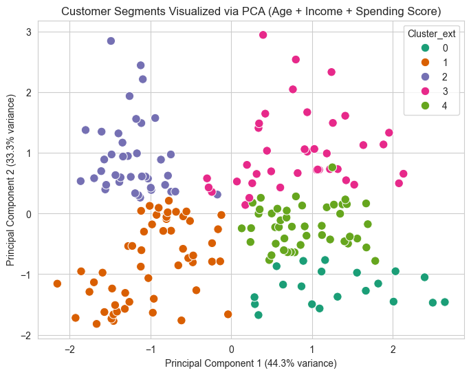
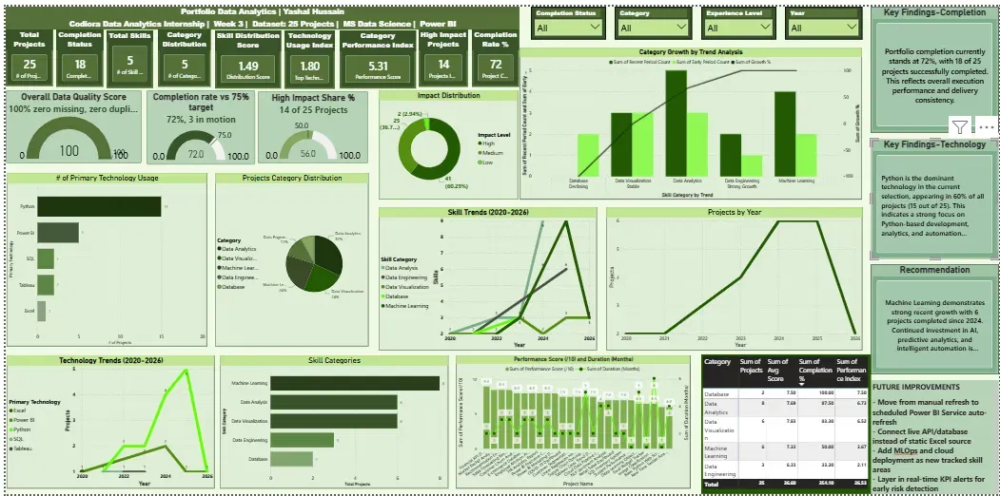

Five real projects
Every case below shows the actual problem, what I decided, and what came of it, including the parts that didn't work the first time.

Loan Default Risk with Business Cost Optimization
The problem. Predicting loan default on the Home Credit dataset isn't just a classification exercise; a missed default costs far more than a good loan wrongly declined. A model tuned for accuracy alone ignores that asymmetry.
What I did. Trained a CatBoost model under memory constraints, then optimized the decision threshold against the actual cost of false negatives versus false positives, instead of stopping at the default 0.5 cutoff.
What came of it. A threshold chosen for business cost, not textbook default: 35% lower total cost than the 0.5 cutoff.

Refresh Opportunity Scoring
The problem. FlyRank had 30,000 live content pages across 32 clients and no reliable way to tell which ones needed attention, when an editor can only review about 50 a week.
What I did. Checked signal strength across four possible framings before touching a model, then tested the rule an editor would actually write by hand: flag old pages ranking poorly.
What came of it. The rule scored 0.540 precision at 50, statistically the same as the 0.542 base rate. That result, not a hunch, is what justified moving to a model.

Term Deposit Subscription Prediction
The problem. A bank wanted to know which customers contacted in a marketing campaign were actually likely to subscribe, so calls could be prioritized instead of made blind.
What I did. Compared several models rather than defaulting to one, and judged the winner on F1 and ROC-AUC together, not accuracy, since subscribers were a minority class.
What came of it. F1 of 0.86 and ROC-AUC of 0.93 on held-out data, a model that actually separates likely subscribers from unlikely ones.

Customer Segmentation
The problem. The Mall Customers dataset has no labels for what "types" of customers exist; someone has to decide how many segments actually make sense and defend that number.
What I did. Ran K-Means across a range of cluster counts and used the silhouette score to pick K, rather than eyeballing a chart.
What came of it. Five segments with a silhouette score around 0.55, distinct enough for a marketing team to target differently instead of treating every customer the same.

Five-Week BI Dashboard Build
The problem. The same underlying questions needed to work for three different audiences, from a business-friendly BI tool to something that could run as a standalone web app.
What I did. Built the same 25-project dataset three times on purpose: Power BI for the first three weeks, then Dash, then Streamlit, to compare what each tool made easy versus painful.
What came of it. A working dashboard in three stacks, and a clear sense of which tool fits which audience.